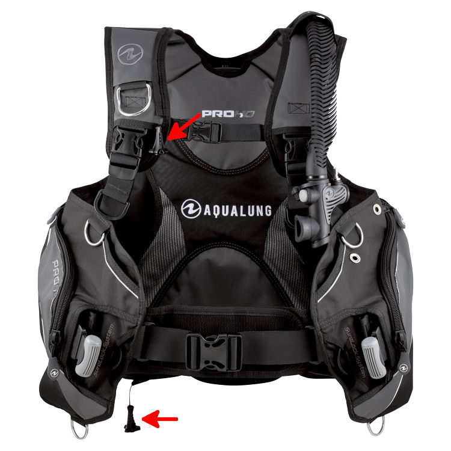
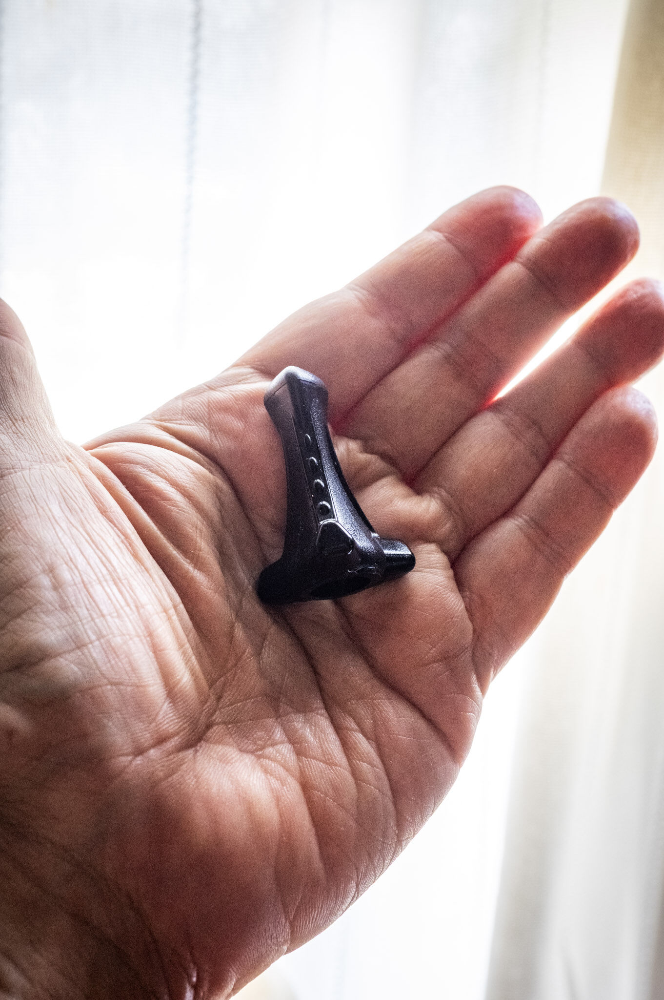
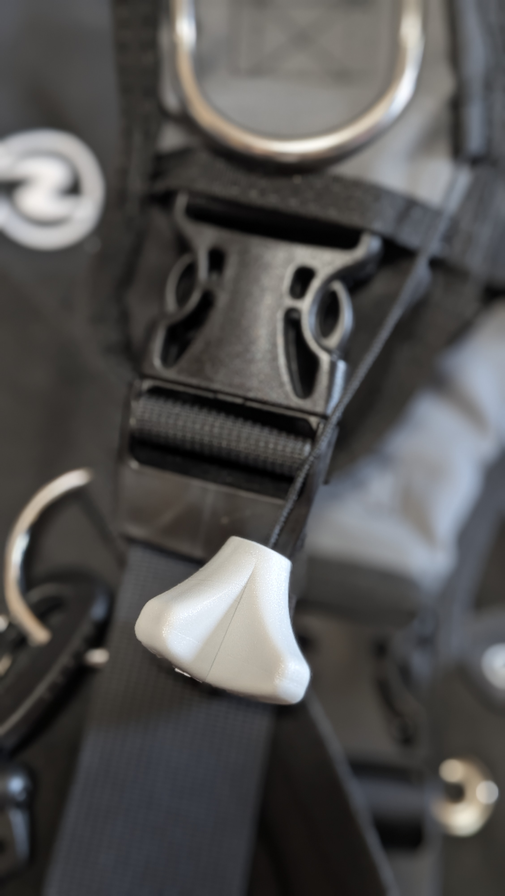

The road Orz passed by 2026 年 10 月
10 月 16 日 ( 金 )
Dive #228 Scuba Pro のプルノブが 1 つ届く

8 日の須磨での実施をお願いしたビーチダイブの可否可能性調査と浮力調整機能再獲得トレーニングの惨状についてはログブックやビーチダイブの可否可能性調査のページで述べた。
そのとき、潜水中にダンプバルブのプルノブがまったく見つからないという強ストレス状況に置かれた。

プルノブとは何かと言うと、画像の赤矢印の先にある、手に持つ小さなパーツになる。
プルノブからラインが伸びているが、このラインは BCD のエアを急速排気するためのダンプバルブに繋がっている。
プルノブを手で引くとラインで引っ張られてダンプバルブが開き、BCD 内のエアが抜ける仕組みになっている。
BCD は吸気も重要だけれども、なによりも排気機能が最重要だと言える。
吸気で慌てることはあまりないが、排気がうまくいかないとかなり焦ることになる。下手をすると急速浮上につながりかねないからだ。
だからダンプバルブからの排気も非常に重要だと言える。

画像は右腰ダンプバルブのプルノブになる。
この画像からはわかりにくいが Aqualung HD Pro Men のプルノブはとても小さい。

どれくらい小さいのかと言うと、この画像くらい小さい。
大きさは充分あるんじゃないか？という人がいるかも知れない。
大きさが充分あるように見えるけれど、はっきり言って痩せすぎなのだ。とても重要なパーツなのに存在感がなさすぎる。Scuba Pro や TUSA のように、触れたときにデンとした存在感があって欲しい。
しかグローブをはめていて、直接プルノブを目視できない状態で、このプルノブを手探りで探すのはかなり手間取る。
ぼくは右肩のプルノブを発見できずにかなり焦った。ぼくが最も多用するのが右肩のダンプバルフだからだ。
右腰のプルノブは、8 日のトレーニング終盤には、目をつぶってもなんとかつかめるようになった。
問題は右肩のプルノブだった。
右肩のプルノブをつかもうとすると、プルノブはつかめずに、ショルダーアジャスターや右肩の D 環、チェストハーネスばかり捕まえてしまう。本当にストレスだった。
プルノブを握るくらい無意識にやりたい。
BCD は完全に目を閉じた状態で操作できないと、そもそも操作自体が難しくなる。水中ではマスクをしていることもあって、目視はほぼ不可能だからだ。
BCD はほぼ完全な身体化が要求される機材なので、目を閉じた程度で操作できないと非常に困る。
だけれども Aqualung HD Pro Men はそうはいかなかった。
もちろん慣れが必要というのは絶対にある。あるのだけれどプルノブはこの位置にあるということが身体的な記憶として記憶されていないと、いざというときに事故に結びつきかねない。
プルノブの位置を脳で記憶するのではなく脊髄で記憶しておく必要がある。
別に BCD が悪いわけではないけれど、BCD でプルノブが見つからないのはダイバーにとって最悪とも言える。

なので画像のようにショルダーのプルノブを Scuba Pro のものに交換した。880 円。安くはない。でも家で確認したところプルノブの存在感は明らかに増した。海でどうなのかはまだ検証する必要がある。
なお余談なのだけれど、Scuba Pro のプルノブの価格が 880 円なのだけれど、送料が 1,750 円もした。鼻血が出た。しかもなぜか 1 個しか注文できない。せめて複数注文できるようにとか、なんとかして欲しい。2 つ交換したかったのだけれど。
- Category :
- #Records of Orz's Road
- #ダイビング
- #スクーバダイビング
- #BCD
- #BC
- #ダンプバルブ
- #プルノブ
- #機材の話